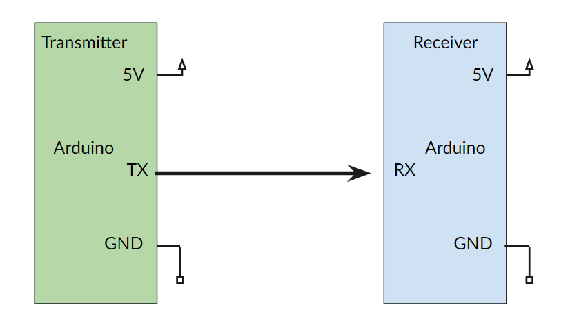
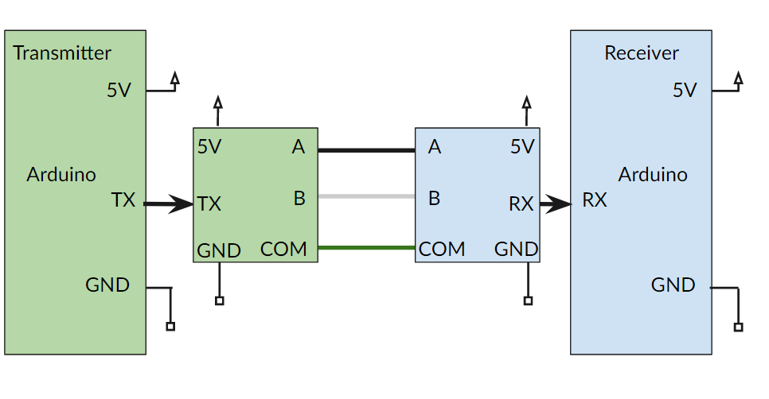
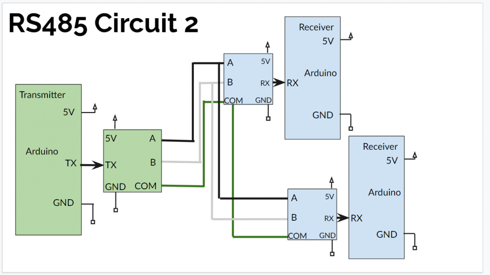

Electronics Bash - #15 - Long Distance Signals
We've got a couple ways to pass signals between Arduinos sitting next to each other on the workbench now, or even 50' away via a wireless dongle. But what if you need to get signals from 1000' away or more?
That's where a robust wired system based on RS485 can help. As a physical protocol, RS485 won't get you there alone - you'll need a communications protocol built on top of it to actually pass data. This week, we'll look at DMX, the most common control protocol in the entertainment lighting field, how it relates to DMX , and how you can use both to pass messages long distances.
Topics Include:
- RS485 fundamentals
- The OSI Model
- DMX (Digital Multiplex)
- Network Topologies
- Singalling and Addressing schemes
- Transmission lines, impedance, and ternimation

Code Libraries
This week we’ll be making extensive use of the Conceptinetics DMX Library to handle DMX communication. You can download it from the link above. There are several published libraries that handle DMX, but this is the one I've had the most success with.
Code


Basic Send
Click here to view code on GithubBasic Receive
Click here to view code on GithubKnob Send
Click here to view code on Github
DMX Basic Send
Click here to view code on GithubDMX Basic Receive
Click here to view code on GithubDMX Knob Send
Click here to view code on GithubDMX Knob Send Dual
Click here to view code on Github